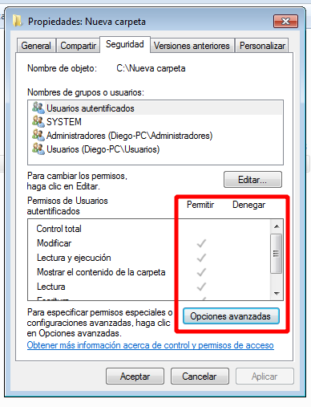

Permisos y descriptores de seguridad
Cada contenedor y objeto de la red tiene información de control de acceso adjunta. Esta información se denomina descriptor de seguridad y controla el tipo de acceso permitido a usuarios y grupos. El descriptor de seguridad se crea automáticamente junto con el contenedor u objeto que se crea. Un ejemplo típico de objeto con un descriptor de seguridad es un archivo.
Los permisos se definen en el descriptor de seguridad de un objeto. Se asocian o asignan a usuarios y grupos específicos. Por ejemplo, para el archivo Temp.dat, el grupo de cuentas predefinidas de administrador podría tener asignados permisos para leer, escribir y eliminar, mientras que el grupo de operadores de copia de seguridad sólo permisos para leer y escribir.
Cada asignación de permisos a un usuario o grupo se representa en el sistema como una entrada de control de acceso (ACE). Al conjunto completo de entradas de permiso de un descriptor de seguridad se le denomina conjunto de permisos o lista de control de acceso (ACL). De esta forma, para un archivo denominado Temp.dat, el conjunto de permisos incluye dos entradas de permiso: una para el grupo de cuentas predefinidas de administrador y otra para el grupo de operadores de copia de seguridad.
Permisos explícitos y heredados
Hay dos tipos de permisos: permisos explícitos y permisos heredados.
- Los permisos explícitos son aquellos que se establecen de forma predeterminada en objetos que no son secundarios cuando se crea el objeto, o los que crea el usuario en objetos secundarios, primarios o que no son secundarios.
- Los permisos heredados son los que se propagan a un objeto desde un objeto primario. Los permisos heredados facilitan la tarea de administrar permisos y aseguran su coherencia entre todos los objetos de un contenedor determinado.
De forma predeterminada, los objetos de un contenedor heredan los permisos desde ese contenedor cuando se crean los objetos. Por ejemplo, cuando crea la carpeta Mi carpeta, todas las subcarpetas y archivos creados en la carpeta Mi carpeta heredan de forma automática los permisos de la carpeta. De esta manera, la carpeta Mi carpeta tiene permisos explícitos, mientras que las subcarpetas y los archivos heredan los permisos.
Los permisos Denegar heredados no impiden el acceso a un objeto si éste cuenta con una entrada de permiso explícito Permitir. Los permisos explícitos tienen prioridad sobre los permisos heredados, incluidos los permisos Denegar heredados.
Como ver los permisos
Podemos acceder a los permisos haciendo click derecho sobre cualquier objeto ( carpeta o archivo ) y seleccionando la pestaña seguridad.
{kind=link}